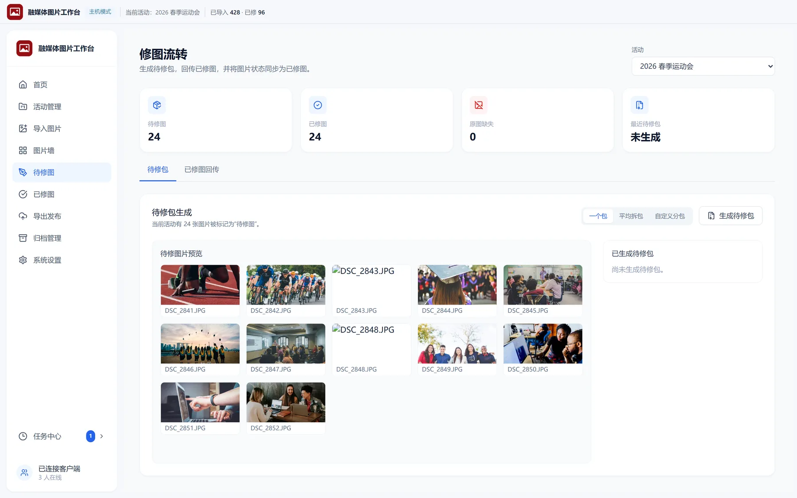
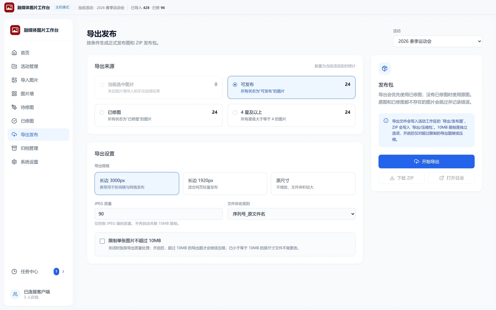
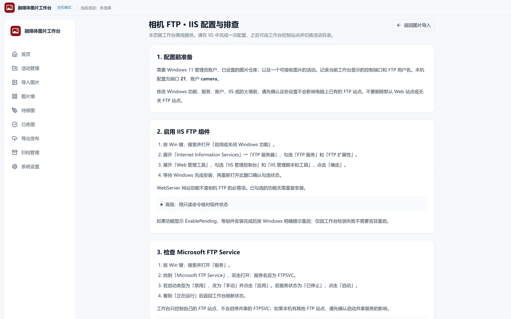

融媒体
图片工作台
面向校园融媒体和活动摄影团队。
当天拍的图，当天收拢、选完、发出去。
一台主机收拢所有相机和笔记本的图，
几台电脑同时选片、修图、出稿，
再也不用靠 U 盘和微信群对版本。
为什么需要它
活动结束后，
活儿才刚开始
一场运动会、一台晚会、一次比赛，拍完只是第一步。
真正费时间的，是把散落各处的照片理顺，
交到对的人手里，再变成能发的东西。
收图别再靠人肉汇总
运动会当天，相机卡、笔记本、U 盘、群聊压缩包各存一份，截稿前没人说得清哪套才是完整的。
选片的人不该各选各的
两台笔记本同时开工，回头一对版本就对不上，同一张片又得重选一遍。
修图回传别再靠猜
全靠文件名硬猜，接错图、漏图是常事，返工之后还得逐张核对。
收尾不该从头再捋一遍
发完图才发现操作记录没留全，磁盘越撑越满，想找去年那场还得翻遍硬盘。
融媒体图片工作台，
把散落一整天的活收成一条线。
完整工作流
从建活动到归档，
七步走完一场
从给活动起名，到把它归档，
照片一路往下走，中间不用换工具。
-
01
创建活动
先给这一场起个名字，一整天拍的图就有了去处。收工打包、以后翻找，都认这个名字。
-
02
导入图片
相机直传、笔记本上传、U 盘里的旧素材，都进同一台主机。
-
03
图片墙筛选
整场片子一只手挑完，鼠标几乎不用碰。留下的、要修的、能发的，当场分成几摞。
-
04
待修图打包
要修的图按人头分成几包，谁修哪几张先说清楚，几个人同时上手不会撞车。
-
05
修图回传
修完丢回来，自动认回原图，状态跟着更新。对不上的那几张会单独列出来。
-
06
发布导出
截稿前把要发的圈出来，导好一次交出去。谁取走哪几张，记录里查得到。
-
07
活动归档
发完把这一场收起来，磁盘留给下一场。想回头翻，缩略图和记录都还在。


活动当天
从收图到发稿，
六件事不用你操心
不堆功能，只做活动当天到发稿这一段路上必须做的事。
导入只复制，绝不覆盖
相机拍完直接进墙，不用拔卡拷卡。进来的图只是复制一份，原图一直没被动过。同一场里重复拍的会自动跳过，上一批不会被盖掉。
数字键就是选片的手
整场片子一只手挑完，鼠标几乎不用碰，顺手就分成要修的、要发的两摞。
几台电脑，同一面墙
一台主机收图，别的电脑输个地址、扫个码就连上。谁改了什么，其他人当场看得见。
多人修图，不再对文件名
要修的图按人数分成几包，一人领一包。修完丢回来会自己认回原图，对不上的那几张单独列出来。
截稿前，筛完即出图
发稿要的那批圈出来就能导，不用再开别的软件转一道。谁取走哪些、导出过几批，记录里都留着。
活动收尾，越用越不乱
这一场收起来，磁盘留给下一场。旧活动留着缩略图和记录，翻得出当时拍了什么、谁取的图。
相机 FTP
相机还在拍，
图片墙已经在出片
- 带 FTP 的相机边拍边送，人还没收工，片子已经在墙上。
- FTP 用 Windows 自带的功能，不用另装服务端。第一次照着应用里的指导配一遍，之后启停、换活动都在工作台里点。
- 照片直接归到当前活动里，原图留在原地，不改名、不复制第二份。
- 拍一张，墙上就多一张。拔卡、拷文件这些事都省了。

边送图
或主机热点
原图原地落盘
边拍边选片
多台相机一起拍，文件名各带前缀，不会互相盖掉。
局域网里的几个人
一台主机，几台电脑
同时开工，图只有一份
- 图从哪儿导进来都行，最后只落在同一台主机上，
不会出现两套版本。 - 笔记本扫码就能连上，平板打开网页也能看片。
- 选片、打星、改状态都在同一面墙上做，
谁改了什么当场看得见。 - 不用挨台通知，其他设备自己就更新了。
运动会当天、晚会散场、截稿前夜，都靠这一面墙同时开工：
有人选片，有人修图，收工时不用再对版本。
适合谁
越是当天要交图，越用得上它
高校融媒体中心
宣传部、团委、院系都来要图，不用再各自留一份底，片子就收在一台主机上。
学生媒体组织
招新换了一茬人也不乱，新人连上主机就能上手。
活动摄影团队
运动会拍完的片子当场进墙，选片修图跟着跑，收摊前稿就出了。
社团宣传部门
没有专职后期也转得动，修图分给几个人，修完自动对回原图。
小型新闻采编团队
截稿只剩半小时，也不用等谁把素材传来传去。
现场连不上外网的团队
晚会现场网被隔离，连上主机开的热点，几台机器照样一起筛片。
产品特性
一台主机收拢当天所有图，
几台电脑一起选片、修图。
图只有一份，留在你自己的硬盘里。
- 硬盘里的才算数 照片就落在你自己选的硬盘目录里，用别的软件也照样打得开。
- 改的是同一份图 几台电脑同时改，改的是同一份记录，不会各自留下一套对不上的版本。
- 解压就能开工 解开就能跑，不装运行库、不配环境。
- 一张图不出内网 图片只在校园网里流转，不经过任何第三方云盘。
- 一场活动一个抽屉 运动会、晚会各归各的目录，收尾归档一下，学期末翻旧账不用满硬盘乱找。
- 免费，还开源 MIT 协议，代码在 GitHub 公开可查，零预算的校园团队直接拿去用，还能自己改。
- 系统要求
- Windows 10 / 11（64 位）都能跑；相机直传需要 Windows 11 上的 IIS FTP 组件，部分家庭版没有。
- 交付形式
- 绿色免安装，不写注册表。
- 更新日志
- 每个版本改了什么，打开就能看全
- 开源协议
- MIT 协议，怎么改、怎么分发都不设限
- 运行数据
- 配置和数据库写在用户目录，图片仓库留在你选的硬盘上，卸载软件也带不走它。